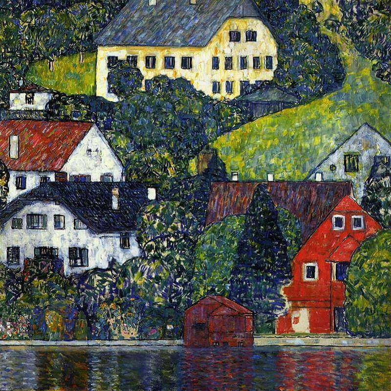

- 
Gustav Klimt
Život Gustava Klimta podudara se sa zlatnim dobom Beča s kraja stoljeća. Bilo je to vrijeme umjetničke obnove i umjetničkog bunta te rađanje modernizma. Nova umjetnost, art nouveau, donosi svoje samosvjesne i dekadentne pravce u slikarstvu i literaturi, kroz koje se provlačila snažna opčinjenost erotikom. Bio je to Freudov Beč, koji je izvana još bio u duhu viktorijanskog morala, ali neobuzdano ponašanje bila je glavna tema dana. Bečka zanesenost erotikom našla je u Klimtu velikog pjesnika. Ni jedan drugi umjetnik nije tako slavio Erosa, a iznad svega žene, kao muze vampa i konačnog ispunjenja svrhe života.
Njegovo slikarstvo ispunjeno je naturalističkim prikazima erotskog i težnjom da platna ispuni sjajnim zamršenim dekoracijama. U njegovim najpoznatijim radovima, kao što je Poljubac, osjećaji i dekorativna prekomjernost sjedinjeni su na veličanstveni način.
POGLEDAJTE JOŠ

Vincent van Gogh

Salvador Dali